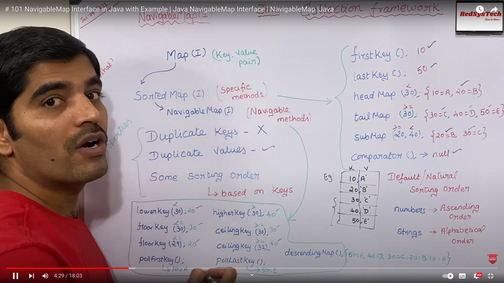

Package com.example.javacoredemo.map
Class MapNavigableMapInterface
java.lang.Object
com.example.javacoredemo.map.MapNavigableMapInterface
- Author:
- Yasir Satti
A SortedMap extended with navigation methods returning the closest matches for given search targets.
Methods lowerEntry, floorEntry, ceilingEntry, and higherEntry return Map.Entry objects associated with keys respectively less than, less than or equal, greater than or equal, and greater than a given key, returning null if there is no such key.
Similarly, methods lowerKey, floorKey, ceilingKey, and higherKey return only the associated keys.
All of these methods are designed for locating, not traversing entries.
A NavigableMap may be accessed and traversed in either ascending or descending key order. The descendingMap method returns a view of the map with the senses of all relational and directional methods inverted. The performance of ascending operations and views is likely to be faster than that of descending ones.
Methods subMap, headMap, and tailMap differ from the like-named SortedMap methods in accepting additional arguments describing whether lower and upper bounds are inclusive versus exclusive. Submaps of any NavigableMap must implement the NavigableMap interface.
This interface additionally defines methods firstEntry, pollFirstEntry, lastEntry, and pollLastEntry that return and/or remove the least and greatest mappings, if any exist, else returning null.
Implementations of entry-returning methods are expected to return Map.Entry pairs representing snapshots of mappings at the time they were produced, and thus generally do not support the optional Entry.setValue method. Note however that it is possible to change mappings in the associated map using method put.
Methods subMap(K, K), headMap(K), and tailMap(K) are specified to return SortedMap to allow existing implementations of SortedMap to be compatibly retrofitted to implement NavigableMap, but extensions and implementations of this interface are encouraged to override these methods to return NavigableMap. Similarly, SortedMap.keySet() can be overriden to return NavigableSet. - See Also:
- Java NavigableMap Interface
, 101 NavigableMap Interface in Java with Example ( video )

-
Constructor Summary
Constructors -
Method Summary
-
Constructor Details
-
MapNavigableMapInterface
public MapNavigableMapInterface()
-
-
Method Details
-
demo
public void demo()Demonstrates methods of MapNavigableMap class.- Since:
- 1.0
-